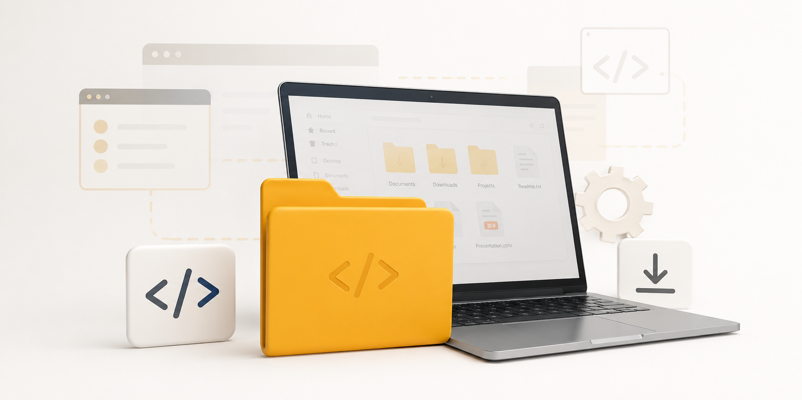

Autodesk Fusion
Software para diseño y modelado 3D, fabricación, electrónica y simulación. Disponible mediante el plan educativo de Autodesk para estudiantes y profesores elegibles.
Acceso para estudiantes open_in_newSoftware, herramientas y enlaces útiles para docencia, programación, robótica y desarrollo de proyectos.
Una selección de recursos utilizados o recomendados para apoyar el trabajo académico y técnico.

Programas y herramientas recomendadas para trabajo académico, programación y desarrollo.
Software para diseño y modelado 3D, fabricación, electrónica y simulación. Disponible mediante el plan educativo de Autodesk para estudiantes y profesores elegibles.
Acceso para estudiantes open_in_new
Entorno de programación y cálculo numérico para análisis de datos, simulación, desarrollo de algoritmos y aplicaciones de ingeniería.
Acceso para estudiantes open_in_newDocumentación, sitios de consulta y recursos externos de utilidad.